Overworld Audio
Captures desktop

Pages internes
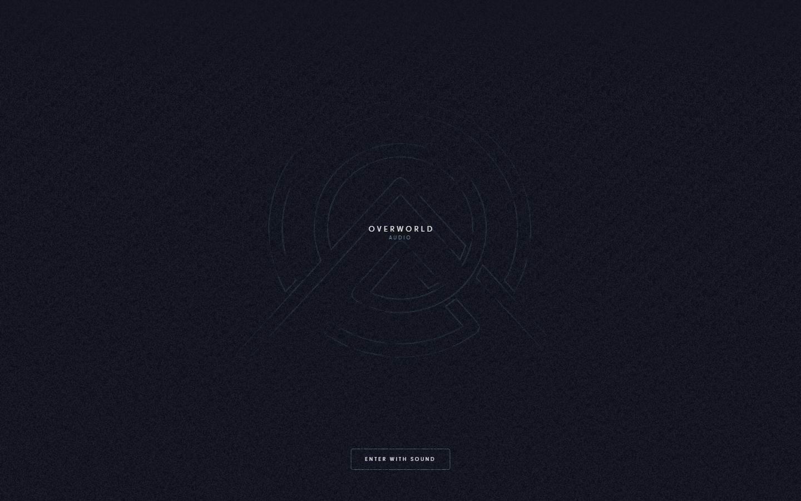
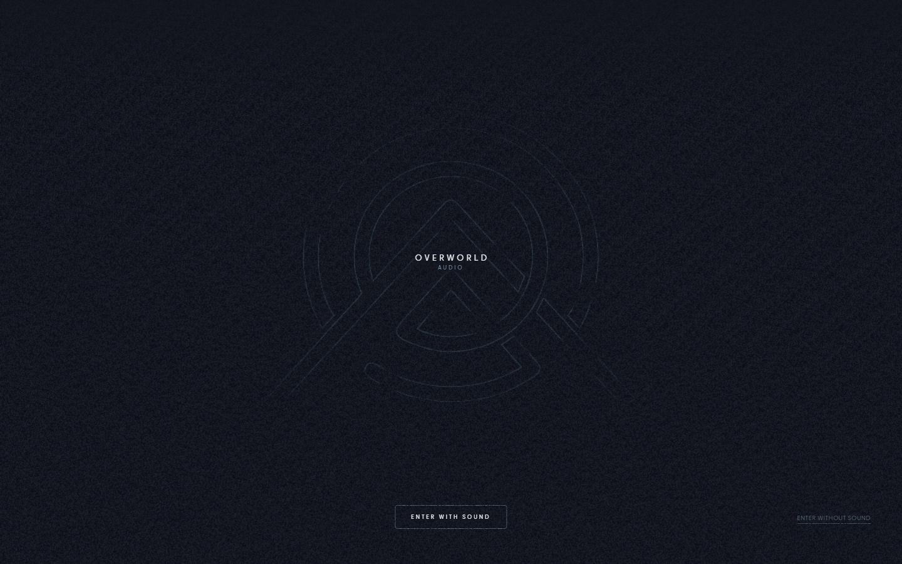
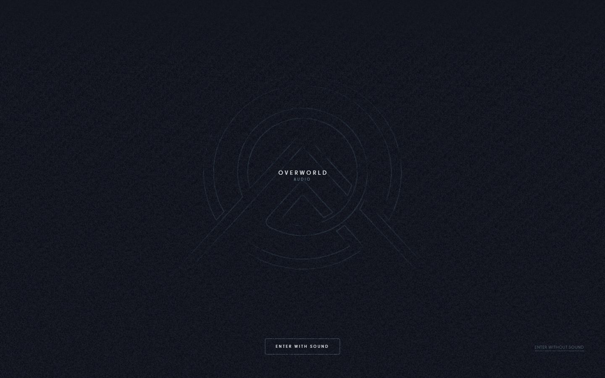
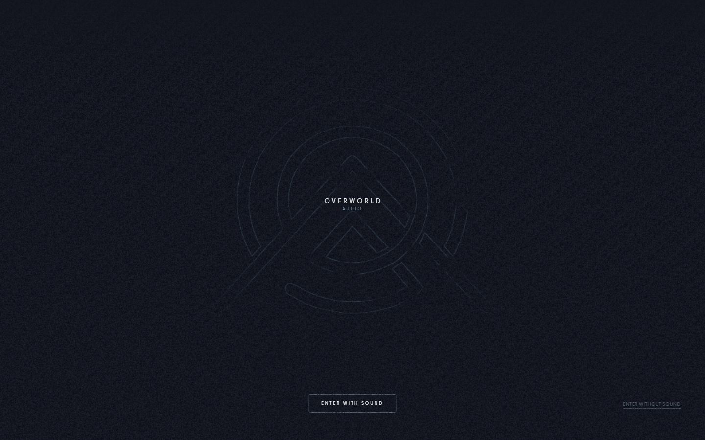
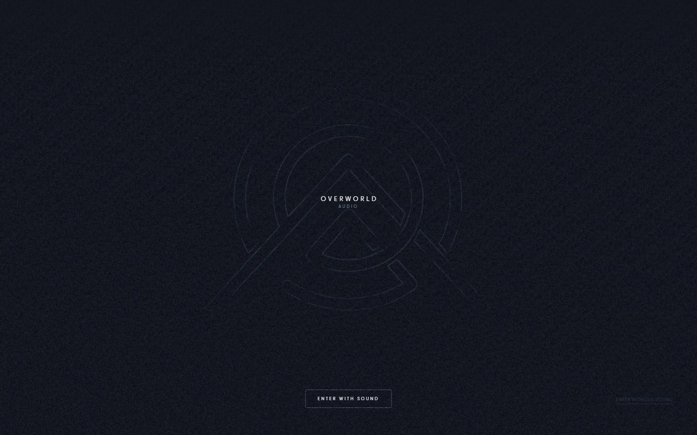
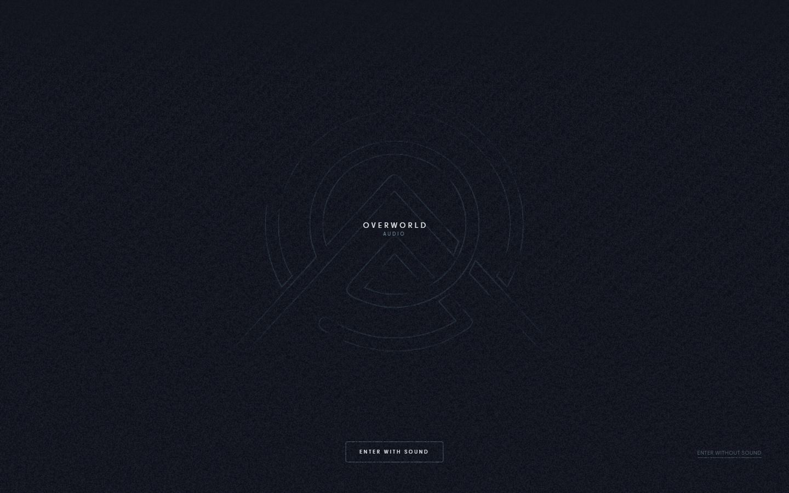
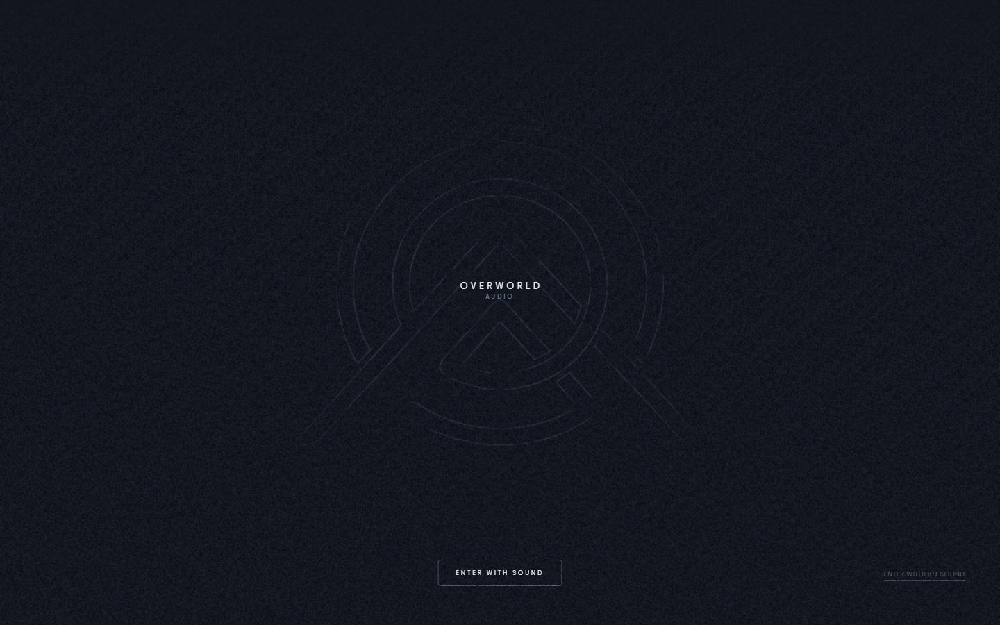
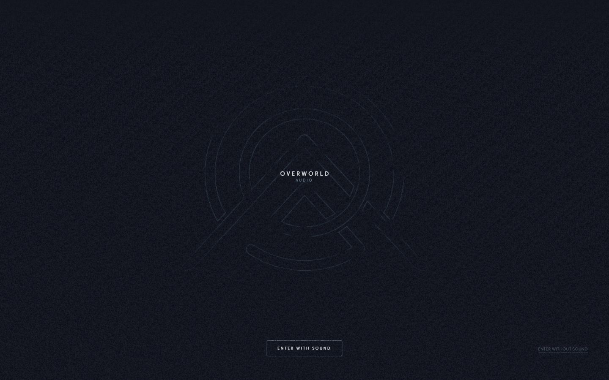
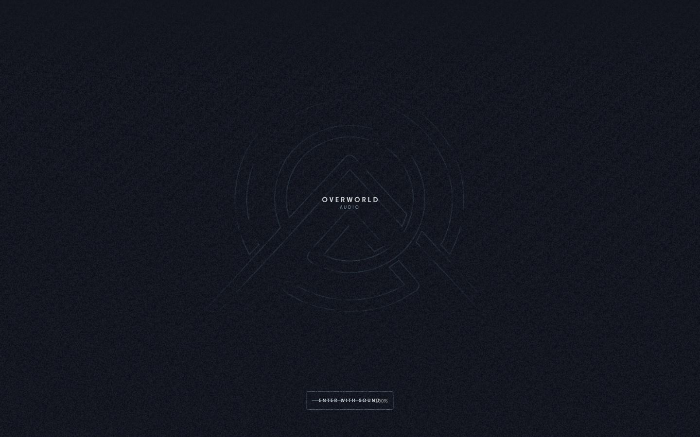
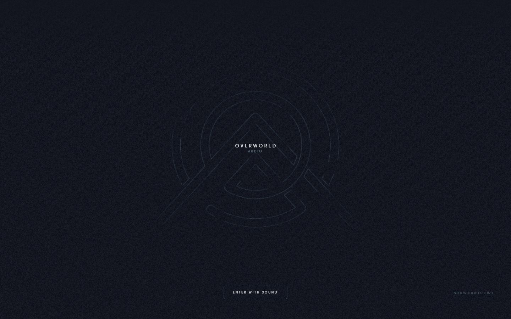
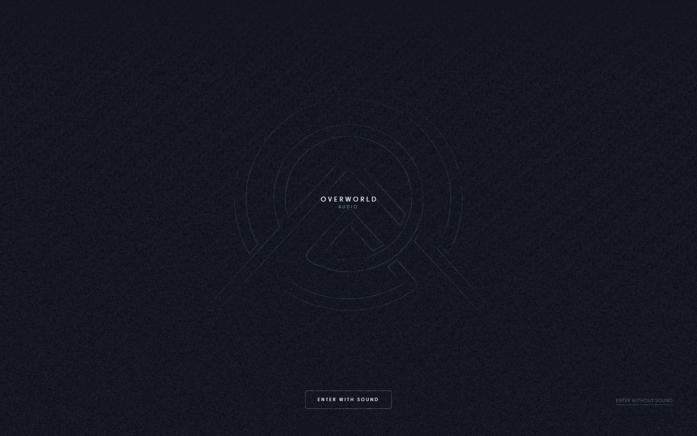
Mobile
Stack détectée
CMS Sanity, GSAP, Howler (audio), Lenis, Lil-GUI/Tweakpane (debug), Nuxt, ScrollTrigger, SplitText/SplitType, Theatre.js, Three.js, Virtual scroll, Vue, WebGL
Shaders GLSL personnalisés extraits : 40 (voir shaders.glsl)
Design tokens
Couleurs (fonds, pondérées par surface)
Couleurs de texte
#e9ecee · #4c5e6b · #6e8799
Polices utilisées (par volume de texte)
PPFrama
Fichiers de police chargés
Typographie
| Élément | Police | Taille | Graisse | Interligne | Interlettrage | Casse |
|---|---|---|---|---|---|---|
| h1 | IvarHeadline, -apple-system, system-ui, BlinkMacSy | 38px | 500 | 34.2px | normal | none |
| p | PPFrama, -apple-system, system-ui, BlinkMacSystemF | 9px | 400 | 13.5px | 0.36px | none |
| a | PPFrama, -apple-system, system-ui, BlinkMacSystemF | 8px | 400 | 8px | 3.2px | uppercase |
| button | PPFrama, -apple-system, system-ui, BlinkMacSystemF | 8px | 400 | 8px | 3.2px | uppercase |
| body | PPFrama, -apple-system, system-ui, BlinkMacSystemF | 16px | 400 | 16px | normal | none |
Échelle des tailles de texte
8px (17) · 9px (4) · 16px (3) · 12px (1) · 38px (1)
Arrondis
3.5px
Transitions CSS fréquentes
Points de rupture (media queries)
768px · 1000px · 1250px · 769px · 600px · 1530px · 1620px · 1710px · 1800px · 400px
Animations CSS (@keyframes)
block-video-spin-2651e29b, reel-modal-in-b1439b63
Variables CSS (:root)
--font-serif: "IvarHeadline",-apple-system,system-ui,BlinkMacSystemFont,"Helvetica","Arial",sans-serif; --font-sans: "PPFrama",-apple-system,system-ui,BlinkMacSystemFont,"Helvetica","Arial",sans-serif; --off-white: #e9ecee; --off-black: #13151f; --color-secondary: #aab9c7; --gray: #6e8799; --dark-gray: #4c5e6b; --expo-out: cubic-bezier(.14,1,.34,1); --quint-out: cubic-bezier(.23,1,.32,1); --z-sound-toggle: 100; --chrome-bottom: 2.6rem; --gl-bleed: 120px; --border: hsla(0,0%,91%,.1); --surface: #1a1a1a; --grid-cols: 12; --grid-gutter: 1rem; --grid-max-width: calc(100% - 3rem); --grid-width: calc(100vw - 3rem); --grid-margin: calc((100vw - var(--grid-width))/2); --grid-track: calc((var(--grid-width) - (var(--grid-cols) - 1)*var(--grid-gutter))/var(--grid-cols)); --panel-col-start: 1; --panel-col-end: 13; --panel-content-left: calc(var(--grid-margin) + (var(--panel-col-start) - 1)*(var(--grid-track) + var(--grid-gutter))); --panel-content-width: calc((var(--panel-col-end) - var(--panel-col-start))*var(--grid-track) + (var(--panel-col-end) - var(--panel-col-start) - 1)*var(--grid-gutt; --panel-cut: -2rem;
Structure de la home
Hauteur : 900 px — 210 nœuds DOM — canvas 1, vidéos 0, images 0
| # | Bloc | Hauteur | Titre | Médias |
|---|
Navigation : ProjectsProjects · StudioStudio · ContactContact
Boutons / CTA :
SEO
Plan des titres
Performance (mesure locale, Chrome headless, connexion non bridée)
Mobile
Fichiers
captures/ : arrivée, scroll desktop (1440×900), pleine page, pages internes, mobile (390×844 @2x) ; vidéo de scroll dans la release GitHub « videos » (lien en haut de fiche)page.html : DOM rendu · styles.css : CSS chargé · scripts/ : JS chargé (index dans _index.json) · shaders.glsl : shaders extraits · rea-bundle.json : analyse REA du bundle (chunks, routes, endpoints)